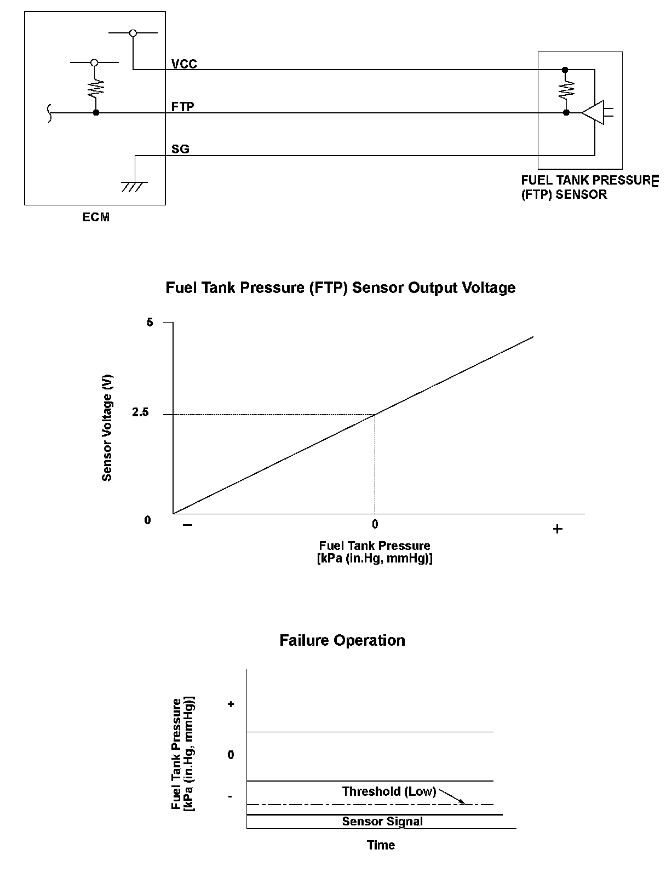
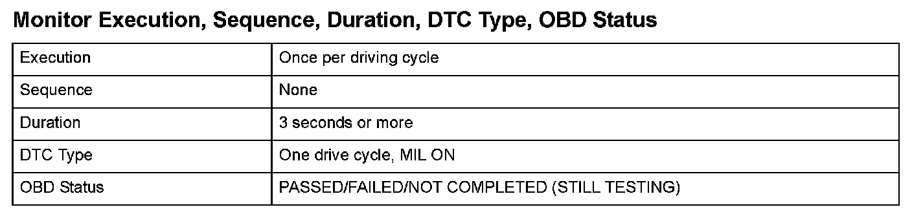
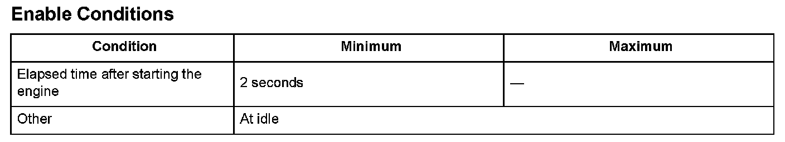

Advanced Diagnostics
DTC P0452: Fuel Tank Pressure (FTP) Sensor Circuit Low Voltage (Engine Type: K20Z3)
General Description
The fuel tank pressure (FTP) sensor is installed on the evaporative emission (EVAP) canister and detects the fuel tank pressure. The FTP sensor is used to detect leaks in the EVAP system.
The engine control module (ECM) monitors the FTP sensor output voltage. The FTP sensor output voltage rises as the fuel tank pressure increases. Conversely, the FTP sensor output voltage drops as the fuel tank pressure decreases. If the FTP sensor output voltage does not reach a target value within a set time after starting the engine in a cold condition, the ECM detects a malfunction and stores a DTC.

Monitor Execution, Sequence, Duration, DTC Type, OBD Status

Enable Conditions
Malfunction Threshold
The output from the fuel tank pressure sensor is less than -7 kPa (-2.1 in.Hg, -55 mmHg) for at least 3 seconds.
Driving Pattern
Start the engine in a cold condition, and let it idle until the radiator fan
comes on.
Diagnosis Details
Conditions for illuminating the MIL
When a malfunction is detected, the MIL comes on and the DTC and the freeze frame data are stored in the ECM memory.
Conditions for clearing the MIL
The MIL will be cleared if the malfunction does not recur during three consecutive trips in which the diagnostic runs.
The MIL, the DTC, and the freeze frame data can be cleared by using the scan tool Clear command or by disconnecting the battery.